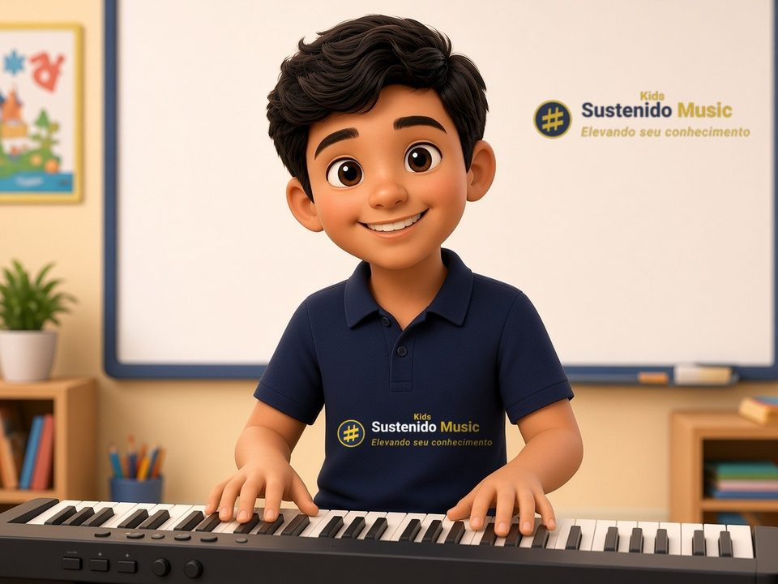
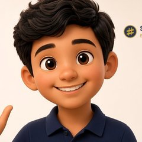

Aula 2
As notas musicais

NidoHoje a gente vai aprender as notas musicais! 🎶 Vamos achar o Dó no teclado?
🎹 Onde está o Dó?

NidoO Dó é a tecla branquinha ⚪ antes das duas pretinhas ⚫⚫!
🗣️ Repete comigo!
7
Quantas notas são?
Sete!
🔤 Cada nota tem uma letra
NidoA letra da nota se chama cifra. Comece no Lá = A e siga o ABC!
| Dó | Ré | Mi | Fá | Sol | Lá | Si |
|---|---|---|---|---|---|---|
| C | D | E | F | G | A | B |
🔁 As notas se repetem
NidoDepois do Si, volta o Dó, mais fininho! De um Dó até o outro é uma oitava.
♯ Sustenido e ♭ bemol
NidoO ♯ sobe um pouquinho. O ♭ desce um pouquinho. O ♯ é o símbolo da nossa escola!
♯Sustenido⬆️
♭Bemol⬇️
🎮 Ache a nota!
🏠 Brinque em casa
⬆️Cante: Dó, Ré, Mi, Fá, Sol, Lá, Si!
⬇️Agora de volta: Si, Lá, Sol, Fá, Mi, Ré, Dó! (3 vezes)
🔤Com o papai ou a mamãe: Sol é…? G! Lá é…? A!
♯O ♯ sobe ⬆️ e o ♭ desce ⬇️